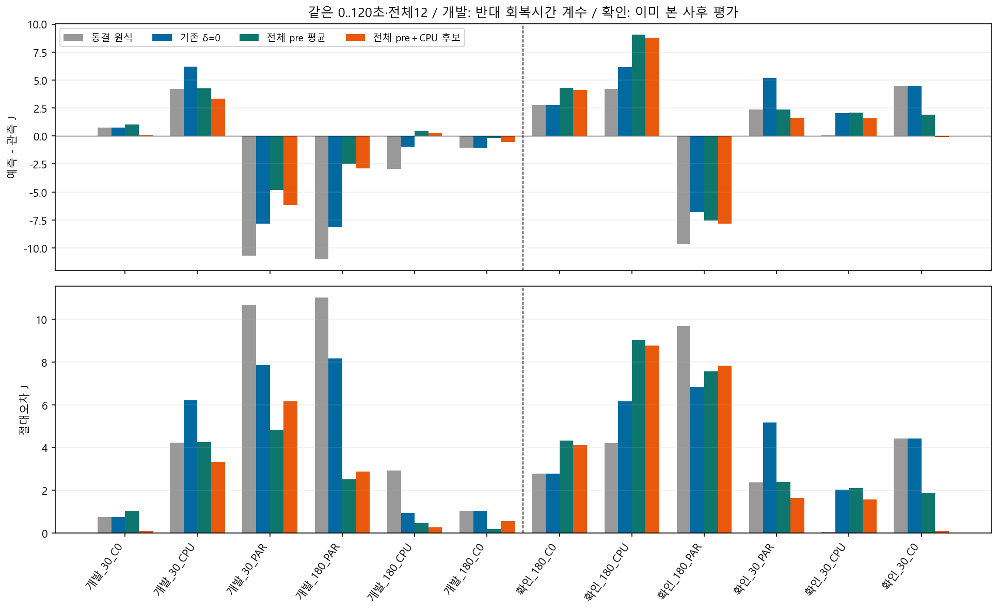
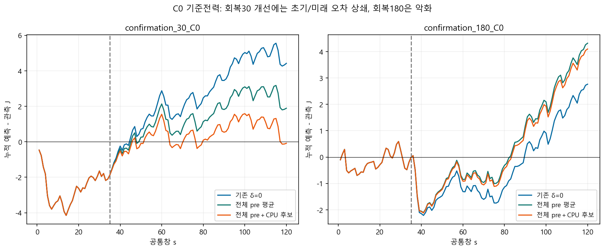
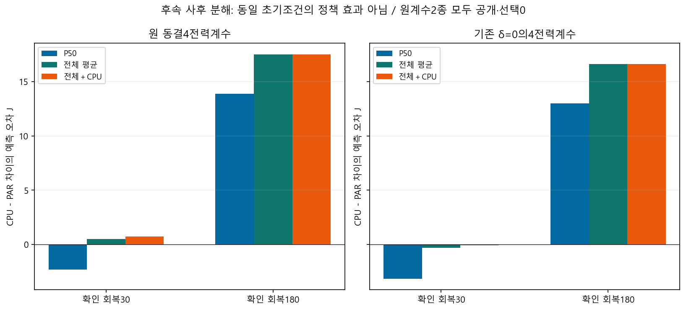

| 같은 확인6 | 원식 | 기존 δ=0 | 전체 pre 평균 | 전체＋CPU 후보 |
|---|---|---|---|---|
| 전체120초 평균 절대J | 3.913 | 4.564 | 4.546 | 4.000 |
| 실제lane 해제 후 유휴 평균 절대J | 2.921 | 2.921 | 2.661 | 2.176 |
개발6 모두 개선/확인6은3개 개선·3개 악화. 원식보다 전체 평균이낮지않고최악도악화했습니다. 장구간평균만의효과와CPU중앙값효과를분리했으며중앙값을물리적지속부하라고인증하지않습니다.
수식·반례·판정 · 원본 의존성·재현 · 전량·정확한 창·부호오차 · 외삽 표시 · 검증

확인 회복30 C0의120초 절대오차4.421→0.086J. 하지만 이전35초−1.886J와 이후85초+1.800J의 상쇄가 있습니다. 이후 구간 자체는6.307→1.800J로개선했습니다. 회복180 C0는2.764→4.098J로악화했습니다.

원계수/기존보완계수2종을 사후에 모두 분해했으며 최선 조합을 선택하지 않았습니다. 원계수와후보의평균은3.913→3.876J로극소감소하나최악9.682→10.690J로악화했습니다. CPU−PAR차이오차는회복30에서줄고회복180에서커졌습니다. 동일초기조건의인과적정책효과나우월성검증이아닙니다.

같은 고정 LOAD_SLOW 후보·같은 마지막 초기AP에서 등록유휴 전체pre를 쓴 AP MAE35..120초는 확인6의0.26518→0.21160°C입니다. 원 동결AP 식과의 비교가 아닙니다. J0..120/AP35..120의두평균오차가함께감소한세션은원J계수기준1/6·δ=0기준2/6,좋은ID를선택기로만들지않았고최악/정책차이개선도아닙니다. 모든24짝과AP최대/최고값오차 · 분모별요약. AP재추정/재생0입니다.
정책 차이 전량표 · 계수/기준값 분해. 사건 시각상 pre 데이터만 사용했지만 CSV는 종료 후 export였으므로 live입력기능은미구현입니다. 실제일정조건부·이미본자료의사후진단, 새정확도PASS없음·A24 raw=mA/절대J미인증·S26계수비혼합입니다.